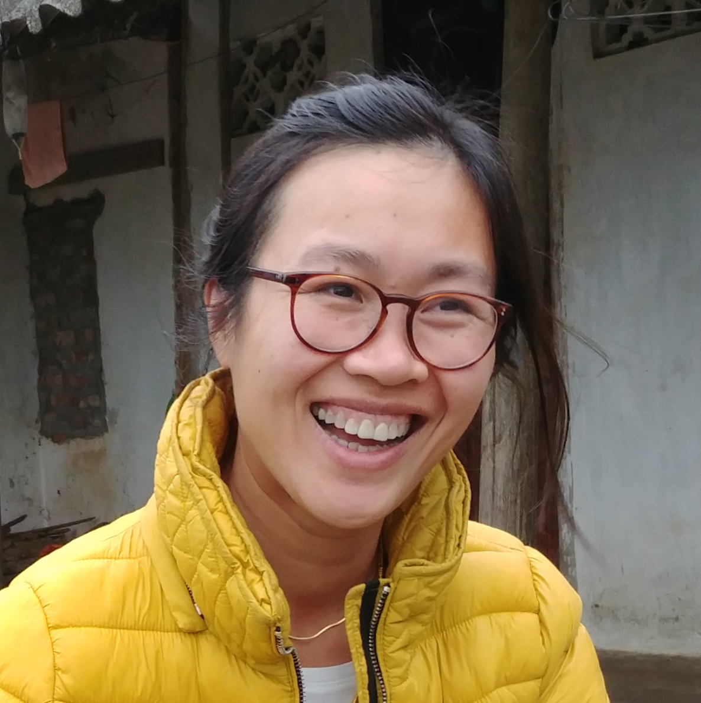

Hi!
My name is Trang.
I am a Berlin-based software developer
Currently I am working at trecker.com, a SaaS startup helping farmers manage and improve their farms, crops and resources via integrated data collection and extensive analysis for data-driven business decision.
- React, Redux, ES6, RoR, Docker
Previously I worked at Magine TV, a cloud-based TV streaming platform delivering live, time-shifted and on-demand content to tablets, smartphones, Smart TVs, PlayStation and web browsers.
- AngularJS, React, Redux, JavaScript
I worked at KIWI, a Berlin startup specializing in keyless electronic locking system and access management for real estate properties.
- Backbone, JavaScript
Currently I specialize in React with Redux.
Previously: Node.js, AngularJS, Backbone.js and more.
- Icons
- Tractor by anbileru adaleru from the Noun Project
- Television by Niels Gesquiere from the Noun Project
- Key by Sergey Demushkin from the Noun Project
- coding by Maxim Basinski from the Noun Project
- Font
- Karla by Jonny Pinhorn
- Built with
- React Static by Nozzle.io
© Trang Nguyen 2018